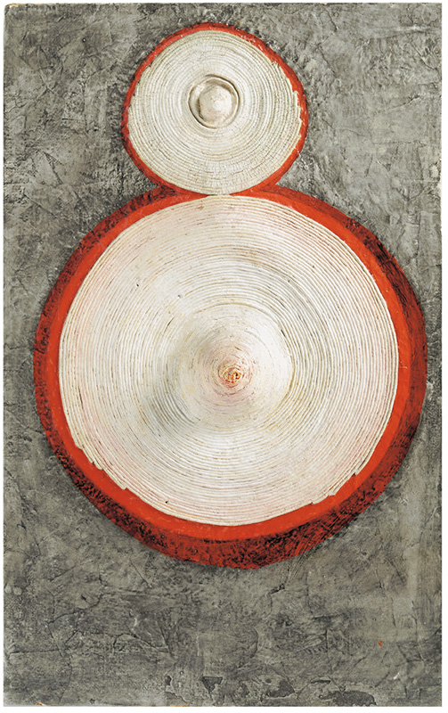
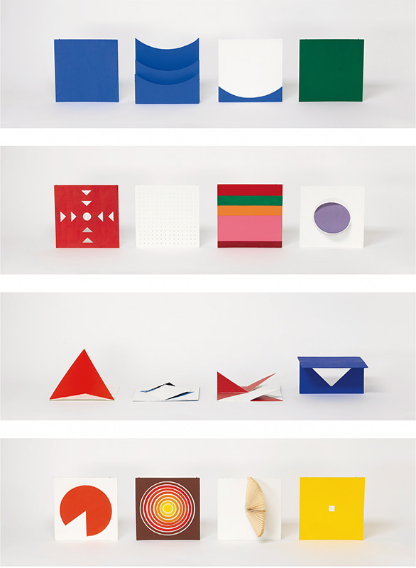

Eva Hesse
Ringaround Arosie (1965)
Imagem e créditos conforme apresentação da disciplina.
Aula 1 · 01 de agosto de 2026
Eva Hesse · Lygia Clark · Lygia Pape
Hipótese
Problema de leitura
Hesse, Clark e Pape não realizam uma mesma crítica. Hesse torna instável a integridade do objeto por materiais precários, repetição e vulnerabilidade temporal. Clark constrói um objeto articulado cuja realização depende do gesto, sem que a autoria desapareça. Pape transforma o folhear em acontecimento espacial e temporal.
Obras em foco

Ringaround Arosie (1965)
Imagem e créditos conforme apresentação da disciplina.

Bicho (1960)
Imagem e créditos conforme apresentação da disciplina.

Livro da criação (1959-1960)
Imagem e créditos conforme apresentação da disciplina.
Três passagens
Hessel aproxima Hesse de práticas que produzem uma experiência corporal sem representar um corpo íntegro e idealizado. Em Ringaround Arosie, protuberâncias, linhas, superfícies e restos de máquina perturbam a limpeza geométrica associada a certa imagem do Minimalismo. A deterioração do látex e as decisões de conservação mostram que a aparência atual já inclui mediações técnicas, museológicas e temporais.
O Bicho é pensado como organismo: possui articulações, resistências e possibilidades de forma que não coincidem inteiramente com a vontade de quem o manipula. Participar é entrar numa coreografia material previamente construída. O gesto realiza a obra, mas pesos, planos e dobradiças condicionam o gesto.
Livro da criação não simplesmente passa do livro à escultura. Conserva páginas, sequência e percurso, enquanto exige gesto, espaço, ritmo e transformação formal. A abertura não é liberdade ilimitada: cortes, cores, ordem e ações possíveis organizam o campo da leitura.
Três operações, não uma mesma crítica
Em Eva Hesse, o material não é veículo neutro de uma forma. Corda, gesso, arame, resíduos industriais e superfícies pintadas introduzem precariedade, irregularidade e transformação temporal no problema escultórico.
Em Lygia Clark, o gesto do participante realiza configurações, mas não domina a obra. Pesos, planos e dobradiças produzem resistências e delimitam a ação.
Em Lygia Pape, folhear não é receber uma narrativa pronta. A sequência de cores, cortes e dobras faz da leitura uma composição espacial e temporal.
Mapa comparativo
| Artista | O que entra em crise | Onde a obra acontece |
|---|---|---|
| Eva Hesse | Integridade, permanência e pureza material do objeto. | Na instabilidade da matéria e no corpo de quem a enfrenta. |
| Lygia Clark | Separação entre escultura e espectador. | Na articulação entre dobradiça, gesto e forma contingente. |
| Lygia Pape | Livro como suporte estável de leitura. | Na sequência, no desdobramento e nas escolhas de quem o percorre. |
A tabela é um instrumento de leitura da disciplina. Ela organiza diferenças entre as obras, sem convertê-las em uma única genealogia da participação.
Eva Hesse
Ao reunir Eva Hesse a outras escultoras que trabalharam antes da consolidação da linguagem da arte feminista, Hessel não propõe uma teoria universal do corpo. Ela chama atenção para formas que tornam difícil sustentar a imagem clássica de um corpo íntegro, idealizado, silencioso e estável.
Sobre Hesse, Hessel escreve que sua escultura pode fazer-nos “ver um corpo sem lhe mostrar corpo algum”. A frase é uma chave de leitura de Hessel, não uma definição final da artista. Em Ringaround Arosie, ela deve ser testada nas protuberâncias celulares, nos desenhos, nas superfícies, no arame e nos fragmentos de máquina.
Eva Hesse: forma, história e conservação
Lygia Clark
Hessel situa Clark entre as artistas que desmontaram tradições de pintura e escultura ao encorajar o contato físico entre espectador e obra. A passagem pela abstração geométrica, pelo Grupo Frente e pelo Movimento Neoconcreto impede que o Bicho apareça como simples rejeição da forma.
A partir de 1959, Clark chamou seus bichos de “organismos vivos”. A expressão não é decorativa. As estruturas metálicas possuem articulações, resistências e possibilidades de arranjo que não coincidem inteiramente com a vontade de quem as manipula.
A controvérsia da participação
O Bicho desloca a experiência da contemplação para a negociação, mas essa negociação ocorre dentro de um dispositivo de autoria definida. A tensão não é uma falha da obra, é o seu problema central.
Há escolhas reais de manipulação, percurso e configuração. A forma não se entrega de uma só vez ao olhar.
Dobraduras, planos e gravidade recusam gestos arbitrários. O corpo aprende pela relação material, não pela fantasia de controle total.
Uma interação pode alterar a forma da obra ou ser apenas uma escolha de consumo. A distinção depende do que o dispositivo permite, registra e transforma.
| Pergunta | Resposta provisória em Bicho |
|---|---|
| Quem determina a forma? | Artista, objeto e participante, em uma relação assimétrica. |
| O participante é coautor? | Realiza uma configuração, mas não controla o sistema de possibilidades. |
| Onde está a obra? | Nem apenas no objeto, nem apenas na experiência: na relação estruturada entre ambos. |
| O que a dobradiça produz? | Tempo, resistência, variação e limite. |
Lygia Pape
Hessel descreve o Livro da criação como uma série que rompe com a tradição: no lugar de páginas convencionais, quadrados de cores primárias que se desdobram em formas bidimensionais e tridimensionais. Não há uma passagem simples do livro para a escultura. A obra torna instáveis as duas categorias.
O livro preserva serialidade, sequência e percurso. Ao mesmo tempo, exige gesto, espacialização e transformação formal. O leitor não recebe apenas uma história, atualiza relações entre cores, planos, dobras, aparições e ocultamentos.
Leitura, revelação e ocultamento
| Livro convencional | Livro da criação |
|---|---|
| Sequência de leitura predominantemente textual. | Sequência tátil, cromática e espacial. |
| Página como suporte. | Página como acontecimento e dobradiça de passagem. |
| Narrativa recebida. | Narrativa construída por percurso e escolha. |
| Forma fixa. | Forma atualizada no manuseio. |
A comparação não afirma que todo livro convencional seja passivo. Ela permite localizar o que Pape altera nas relações entre suporte, gesto e sequência.
Contexto brasileiro: condição, não ilustração
Hessel observa que o Movimento Neoconcreto se encerra em 1961, em uma sequência que coincide com o fim da democracia liberal e a ascensão da ditadura, que duraria até 1985. O contexto não resolve o sentido de cada dobra do Livro da criação, tampouco autoriza uma leitura ingênua de liberdade como slogan.
A pergunta mais precisa é outra: como uma obra que oferece escolhas formais reorganiza a relação entre sujeito, forma e possibilidade? Sua política não depende de cada elemento funcionar como alegoria unívoca. Ela se formula na experiência de uma liberdade estruturalmente condicionada.
Comparação que preserva diferenças
Fotografia: posição, não eixo substituto
Uma fotografia fixa uma aparência de Ringaround Arosie ou de uma escultura de látex, mas não interrompe a história material de alteração e conservação que torna essa aparência instável.
Foto e vídeo podem registrar uma configuração do Bicho, mas não equivalem à negociação corporal entre gesto, articulação, resistência e forma.
O registro preserva páginas e configurações do Livro da criação, mas seleciona um momento e pode transformar um percurso de leitura em uma imagem aparentemente estável.
Método de seminário
1. Situar. Nomeamos artista, obra, data, material e situação de apresentação. 2. Descrever. Selecionamos uma decisão formal ou material verificável. 3. Formular. Propomos uma hipótese que a descrição sustenta, sem tratá-la como conclusão automática.
4. Atribuir. Diferenciamos o que Hessel afirma, o que uma artista enuncia e o que interpretamos na sala. 5. Manter aberto. Indicamos uma pergunta simples que a obra ainda deixa: um aspecto que merece nova observação, comparação ou pesquisa.
Fecho da aula
Ela passa a exigir uma análise capaz de reconhecer forma em suas relações com matéria, duração, corpo, instituição e reprodução. Essa exigência prepara a Aula 2: autoria, trabalho e instituição não aparecem depois da obra, mas participam de sua produção e de sua permanência pública.
Leitura-base: Katy Hessel, A história da arte sem os homens, capítulos “A expansão da abstração” e “O corpo na escultura”. Formulações entre aspas nesta página são atribuídas conforme a edição brasileira consultada.